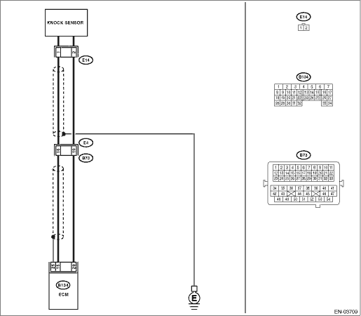

DTC DETECTING CONDITION:
Immediately at fault recognition
TROUBLE SYMPTOM:
• Poor driving performance
• Knocking occurs.
CAUTION:
After repairing or replacing the defective part, perform the Clear Memory Mode  and Inspection Mode .
and Inspection Mode .
WIRING DIAGRAM:


| STEP | CHECK | YES | NO |
|
Is the resistance less than 400 kΩ? |
|
|
|
|
Is the resistance less than 400 kΩ? |
Replace the knock sensor. |
Repair the ground short circuit of harness between knock sensor connector and ECM connector. NOTE: The harness between both connectors are shielded. Repair the short circuit of harness covered with shield. |
|
|
Is the voltage 2 V or more? |
Even if the malfunction indicator light illuminates, the circuit has returned to a normal condition at this time. (However, the possibility of poor contact still remains.) NOTE: In this case, repair the following item: • Poor contact of knock sensor connector • Poor contact in ECM connector • Poor contact of coupling connector |
Repair the poor contact of ECM connector. |